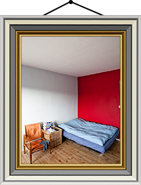
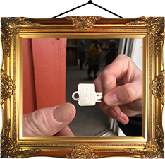

Boformer
Der findes mange forskellige måder at bo på alt efter, hvad du
foretrækker og har økonomi til.
Her kan du se en oversigt over forskellige boformer man kan bo på.
1. Kollektiver

Først har vi kollektiverne. Et kollektiv betyder at man bor flere
sammen og typisk deles om pligter, madlavning og vedlighold samtidig
mens man har meget socialt samvær.
Så savner du en familie-nær konstallation kunne denne boform måske
være for dig.
2. Kollegier
Kollegier minder på mange måder om kollektiver. Forskellen er dog at
kollegier typisk kun er for studerende og så er antallet af beboere
også typisk større i et kollegium.
Kollegier er ret billige, altså med lav husleje (alt efter hvor
centralt de ligger) og er derfor en god løsning for dig, som gerne vil
bo billigt og sammen med andre.

3. Ungdomsboliger
Ungdomsboliger er typsik mindre lejligheder med meget billig husleje. Du (eller din roomie) skal være studerende for at bo der. Så når du ikke længere er studerende skal du finde dig et nyt hjem. Man skal ofte stå på ventelister til dem. Så hvis du er studerende, er ude i god tid og gerne vil bo meget billigt er dette en god løsning for dig.
4. Privat udlejning
Privat udlejning er en af de store kategorier indenfor boligudlejning.
Det kendetegner sig på, som navnet antyder, at det er udlejning af
lejligheder, som er ejet af privatpersoner eller private virksomheder.
Oplevelsen af at leje privat kan variere meget, da det kommer an på
hvordan udlejeren er. Det kan være en rigtig god oplevelse, men det
kan også være noget værre lort, hvis udlejeren aldrig svarer, aldrig
fikser ting og hæver huslejen ofte osv. Men det omvendte kan også være
tilfældet. Så hvis du ikke har tid til skrive dig op til en
boligforening eller har høj indkomst, så er privatudlejning sikkert en
god løsning for dig.
Link til Boligportalen (privat udlejning)
5. Boligforeninger
Boligforeninger er en genial ting, som er værd at sætte sig ind. Bare
rolig. Det er ret nemt.
Boligforeninger er foreninger, der ejer en række lejligheder til
udleje. Oftest er lejlighederne billigere at leje ift. det private
boligmarked. Det der er humlen her er, at man ofte skal vente en rum
tid på ventelister for at komme i betragtning til dem. For det meste
koster et medlemskab omkring 100kr. om året eller er gratis. Så det er
bare med at få det gjort i god tid, hvis ved at du gerne vil flytte
til Aarhus eller til et andet sted i Aarhus om et par år. Dette er en
god mulighed for dig, der er ude i god tid og har tålmodighed.
Link til Aarhus Bolig
Link til Ungdomsbolig Aarhus
6. Værelse
Værelset er for dig, der flytter alene til byen og ikke har nogen roomies med på forhånd. Typisk finder du nogen som søger en roomie (f.eks. på facebookgrupper) og ansøger om at leje et værelse. Ofte så bliver man hevet ind til en samtale hos de nuværende beboere, så alle parter kan få en fornemmelse af om det kunne fungere. Hvis ja, så får du lov til at leje et værelse i en lejlighed, du deler med et par andre. Du har selvfølgelig dit eget værelse og så deles i om fællesarealer som køkken, bad, stue osv. Nogle bofællesskaber på denne måde, kan være mere kollektivt end andre. Nogle fungerer også bare som "separate roomies" at man nærmest ikke har noget med hinanden at gøre udover at dele faciliteter. Denne løsning er god for dig, hvis du ikke kender så mange i byen eller mangler nogen at bo med. Læs mere om facebookgrupper her
7. Andelsbolig
Andelsboligen er lidt mere speciel. Først og fremmest kræver det at man køber en andel i en andelsboligforening. Det betyder ikke at du kommer til at eje din lejlighed, men i stedet at du kommer til at eje en andel i boligforeningen. I praksis vil det måske føles som om at du lejer en lejlighed, men din husleje vil bare være noget billigere (hvis man ser bort fra andelsprisens). Fordi man køber en andel i en boligforening er der ofte et fælleskab, man bliver en del af. Så vedligeholder man bygningen og haven sammen, spiser sammen engang imellem osv. Andelsboligen er god for dig, som har højere indkomst eller en god opsparing og har lyst til at bo billigere i byen.
8. Ejerlejlighed
Ejerlejligheden adskiller sig meget fra lejeboligen og andelsboligen idet du her rent faktisk selv kommer til at eje lejligheden. Det kan være en god økonomisk investering, men lejligheder er dyre i Aarhus - en lille 2 værelses på 50m3 koster f.eks. lige så meget som et standard hus i det urbane jylland. Men hvis du kan låne dig til det eller har nogle forældre som er rige, så er dette en god mulighed for ikke bare at smidde dine penge ud ad vinduet til husleje.
9. Fremleje
Fremlejen er for dig, der ude i sidste øjeblik eller som vil være meget fleksibel ift. boligsøgning. Fremelej går ud på at man lejer et værelse eller en lejlighed af nogen, der midlertidigt udlejer deres bolig (ofte fordi de skal ud og rejse eller på udveksling). Derfor er lejeperioden her ofte mellem 1-6 måneder. Fordelen er her, at der som regel ikke er noget depositum udover forudbetalt leje og at du kun er bundet en kort periode, hvis dine planer ændrer sig undervejs ift. studie- og boligønsker.
